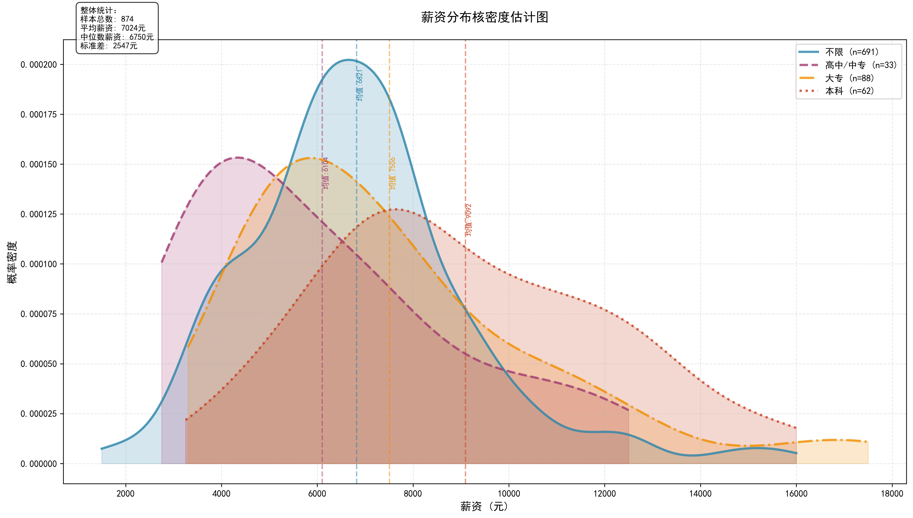
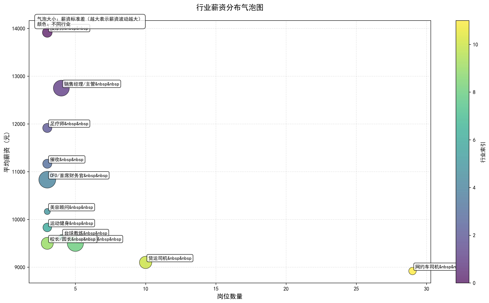
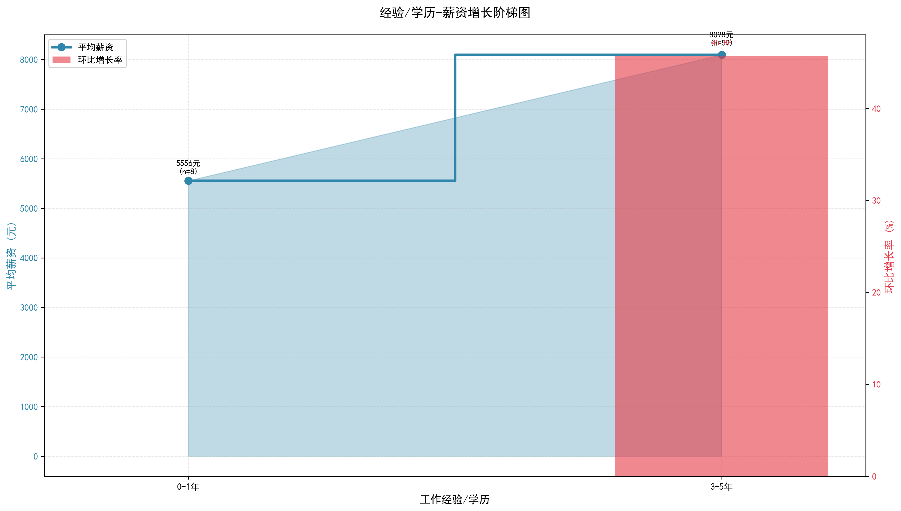
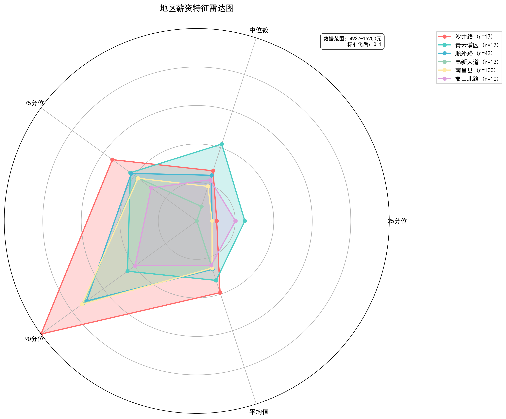
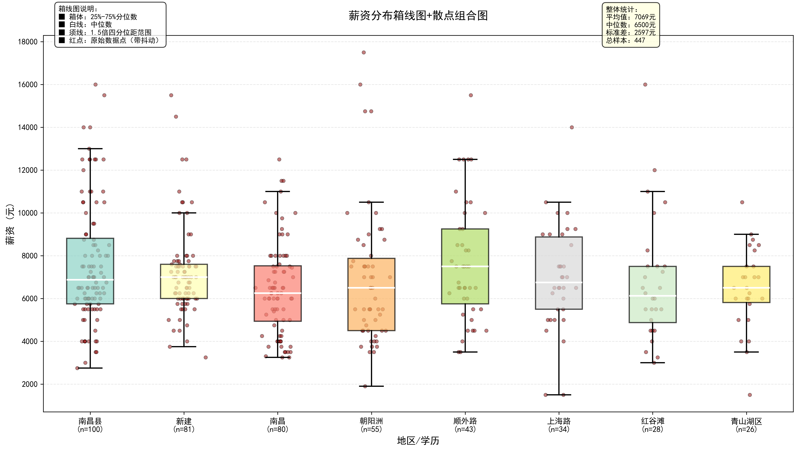

一个基于 Scrapy 框架的分布式爬虫项目，从 58 同城（南昌站）抓取全站招聘信息， 结合 Pandas、NumPy、SciPy 进行数据清洗与统计分析，并通过 Matplotlib 生成 5 张专业可视化图表，完成对招聘市场薪资结构的深度洞察。
从数据采集到可视化分析，完整的数据处理流水线。
基于 Scrapy 框架，自定义 XPath 提取职位标题、薪资、地点、公司、任职要求，支持多页面爬取与防重复。
HTML 实体解码、字段标准化、薪资范围解析，将原始非结构化数据转化为可分析的表格数据。
按行业、学历、经验、地区 4 个维度分析薪资分布，计算均值、中位数、标准差等统计量。
生成气泡图、核密度估计图、阶梯图、雷达图、箱线图 5 种可视化，多角度呈现薪资结构。
基于标题+薪资+公司+地点的唯一标识去重 Pipeline，确保数据质量与统计准确性。
JSON Lines 格式存储，每条记录独立一行，方便增量追加与后续导入各种分析工具。
5 张专业数据可视化图表，全方位呈现南昌招聘市场的薪资结构。

展示不同学历/类别的薪资概率密度曲线，标注均值位置。颜色和线型区分不同群体，填充区域直观反映分布形态。附整体统计摘要。

X 轴为岗位数量，Y 轴为平均薪资，气泡大小代表薪资标准差，颜色区分行业。快速识别高薪低波动的优质行业。

阶梯图+增长率柱状图双轴组合。主轴展示平均薪资阶梯线，辅轴以红色柱状图标注环比增长率。揭示薪资跃升节点。

多维度（25 分位、中位数、75 分位、90 分位、平均值）对比不同地区的薪资特征。标准化映射到 0-1。

箱线图展示 25%-75% 分位数区间与中位数，叠加抖动散点图显示全部原始数据点。配色柔和，附统计面板。
基于南昌站 ~1000 条招聘数据的多维度薪资分析，总结出以下核心发现。
外卖骑手（6k-9.5k）、网约车司机（8k-10k）、娱乐场所店员（8k-12k）等不限学历经验的岗位提供有竞争力的薪资，适合快速入职。
足疗师/按摩师（10k-15k）、美容师（6k-12k）、技术工程师（8k-15k）等技能型岗位薪资显著高于普通文职，技能溢价可达 50%-100%。
行政专员（4k-6k）、客服（3.5k-8k）、文员（3k-5k）等办公室岗位薪资区间较窄，但福利完善、工作稳定，五险一金覆盖率高。
销售经理（10k-21k）、驻店总经理（10k-15k）、技术工程师（8k-15k）代表市场薪资天花板，需 3-5 年经验积累。
居家游戏主播（5k-8k）、陪诊师（5k-8k）、台球助教（8k-12k）等新型灵活就业岗位快速增加，迎合年轻求职者偏好。
薪资含绩效/补贴，需确认保底金额；五险一金、包吃住、可预支是热门福利；正规岗位无入职费用，警惕缴费陷阱。
Scrapy 标准项目结构，模块化设计，层次清晰。